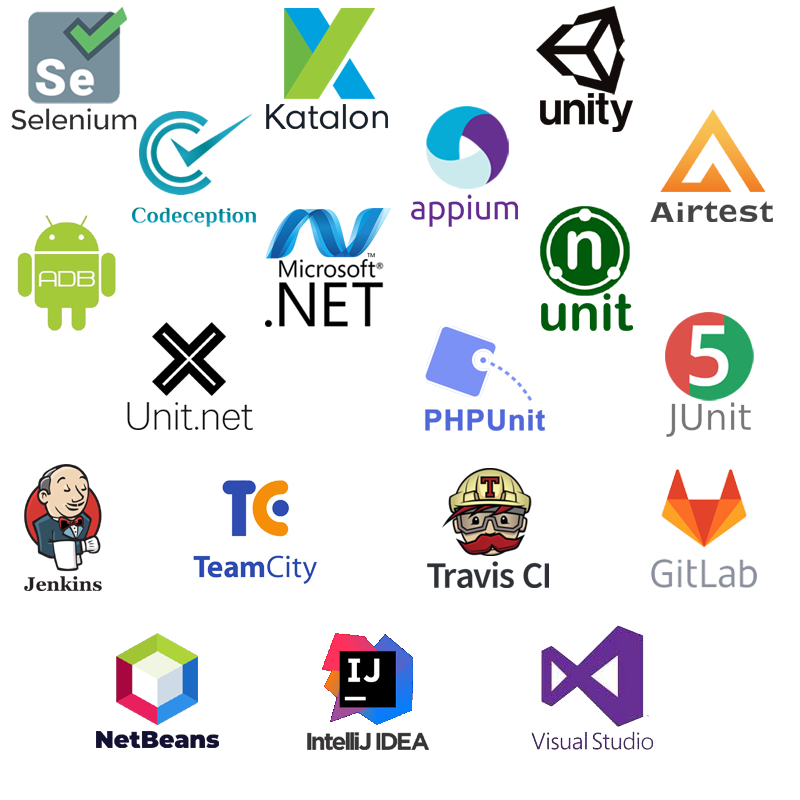

Somov Studio
Автоматизированное тестирование Web приложений выполняется технологией Selenium.
Разработка автоматизированных тестов осуществляется с помощью фреймворка Codeception или Katalon Studio.
Автоматизированное тестирование Native приложений выполняется технологией Appium.
Разработка автоматизированных тестов осуществляется с помощью Katalon Studio.
Автоматизированное тестирование 3D мобильных приложений разрабатывается и выполняется непосредственно в среде Unity с помощью встроенной технологии Test Runner или с помощью AirTest IDE.
Автоматизированное тестирование Desktop приложений выполняется с помощью WinAppDriver.
Выполнение модульного тестирования средствами:
XUnit,
NUnit,
JUnit,
PHPUnit.
Для непрерывной работы автоматизированных тестов используется программная система Jenkins
В качестве среды разработки используются:
NetBeans,
IntelliJ IDEA,
Visual Studio Express
Codeception — популярный фреймворк для тестирования Web приложений. Основан на технологии PHPUnit и способен выполнять модульные (unit), функциональные (functional) и приемочные (acceptance) тесты.
Selenium — инструмент для автоматизации действий веб-браузера. Применяется в приемочных тестах на Codeception.
Katalon Studio — набор инструментов для автоматизированного тестирования веб и мобильных приложений..
Unity Test Runner — разработка интеграционных тестов и выполнение автоматизированного тестирование мобильных приложения.
Appium — кроссплатформенный инструмент с открытым исходным кодом, помогает автоматизировать тестирование мобильных приложений для Android и iOS.
XUnit, NUnit, JUnit, PHPUnit — выполнение модульного тестирования.
Jenkins - программная система с открытым исходным кодом на Java, предназначенная для обеспечения процесса непрерывной интеграции программного обеспечения.